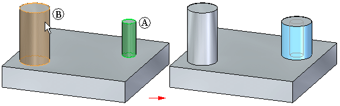

Equal Radius command
Makes the seed face radius equal to the target face radius. For example, you can make
the radius of a cylindrical seed face (A) equal to the radius of a cylindrical target
face (B).

Note:
You cannot select a hole feature face as the seed or target element.
The equal radius relationship persists by default. You can turn the persist option off while in the command.
You can choose the equal radius command first. Then select the seed face(s) and target face.
You can also create the seed select set first and then choose the equal radius command. Then select the target face.
How do I
Define a relationship between two facesLearn more
Defining relationships between model facesLook up more details
Coplanar commandCoplanar relationship command bar
Concentric command
Concentric relationship command bar
Symmetry command
Symmetry relationship command bar
Offset command
Offset relationship command bar
Parallel command
Parallel relationship command bar
Aligned Holes command
Aligned Holes relationship command bar
Equal radius relationship command bar
Perpendicular command
Perpendicular relationship command bar
Tangent command
Tangent relationship command bar
Horizontal and Vertical command
Horizontal and vertical relationship command bar
Ground command
Ground relationship command bar
Rigid command
Rigid relationship command bar